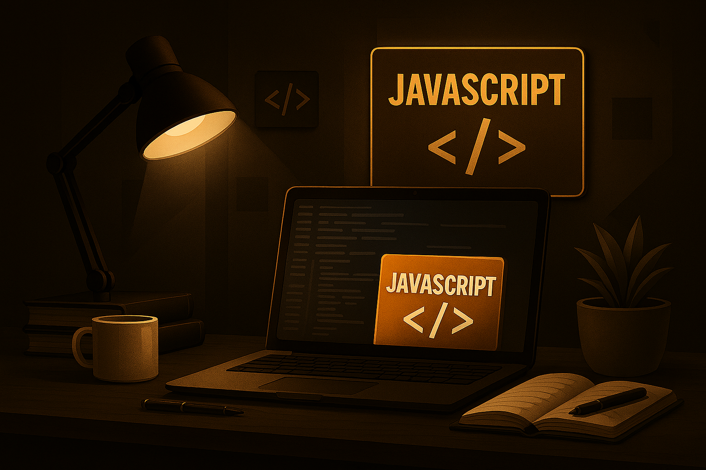

Sobre Mim
Profissional da área jurídica com mais de 15 anos de experiência em contextos públicos e privados no Brasil e em Portugal, com forte actuação nas áreas administrativa, jurídica (contencioso e preventivo) e de atendimento institucional. Actualmente em processo de transição de carreira para o sector das tecnologias de informação, procuro consolidar um novo percurso profissional nas áreas de desenvolvimento, redes, dados ou suporte técnico. Com elevada capacidade analítica, pensamento lógico, organização e facilidade na aprendizagem de novas ferramentas digitais, pretendo aliar a experiência profissional adquirida à criação de soluções tecnológicas eficientes e inovadoras.
FORMAÇÃO ACADÊMICA
- Pós-graduação em Direito Processual Civil – Universidade Anhanguera (2010 - 2012)
- Bacharelado em Direito – Universidade Salgado de Oliveira (2003 - 2007)
- Bacharelado em Engenharia Elétrica – Universidade Federal de Goiás (2001 – 2002 – Não concluído)
FORMAÇÃO EM TECNOLOGIA / CURSOS COMPLEMENTARES
- Frontend JavaScript-Lisboa - Programa UPskill (a cursar)
- Introdução à Programação – Alura (75h)
- CC50 – Ciência da Computação (Harvard no Brasil) – Fundação Estudar (70h)
- Imersão Front-end: HTML, CSS e JavaScript – Alura (5h)
- Plano de Marketing Digital com ferramentas online – IEFP, Lisboa
Principais Matérias Estudadas

